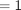
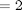

Sort
The class sorts input data series into increasing numerical order by their axis values.
Contents
%MATLAB CODE %%%%%%%%%%%%%%%%%%%%%%%%%%%%%%%%%%%%%%%%%%%%%%%%%%%%%%%%%%%%%%%%%%%%%%%%%%% classdef BsSort < handle
%%%%%%%%%%%%%%%%%%%%%%%%%%%%%%%%%%%%%%%%%%%%%%%%%%%%%%%%%%%%%%%%%%%%%%%%%%%
How to use the class
There are two ways to use this class:
- To sort a 1 dimensional data series object by its axis values.
- To sort a 2 dimensional data series object by its axis values.
Properties
%MATLAB CODE %%%%%%%%%%%%%%%%%%%%%%%%%%%%%%%%%%%%%%%%%%%%%%%%%%%%%%%%%%%%%%%%%%%%%%%%%%% properties end %%%%%%%%%%%%%%%%%%%%%%%%%%%%%%%%%%%%%%%%%%%%%%%%%%%%%%%%%%%%%%%%%%%%%%%%%%%
List of methods
The class introduces two new methods:
- [SortDataSeries()| - Function returns a one or two dimensional data series sorted into increasing numerical order by axis values.
- [ShellSort2()]| - Function returns a data series sorted in increasing numerical order by either a row or a column but not both.
%MATLAB CODE %%%%%%%%%%%%%%%%%%%%%%%%%%%%%%%%%%%%%%%%%%%%%%%%%%%%%%%%%%%%%%%%%%%%%%%%%%% methods
% Constructor function obj = BsSort() end %%%%%%%%%%%%%%%%%%%%%%%%%%%%%%%%%%%%%%%%%%%%%%%%%%%%%%%%%%%%%%%%%%%%%%%%%%%
ans = Bootstrap.BsSort handle with no properties. Package: Bootstrap
Details of methods
1) [BsSort()]
""""""""""""""""""""""""""""""""""""""""""""""""""""""""""""""""""""""""""
Description
Function returns a sorted version of the one or two dimensional DataSeriesIn with the values of the axes in increasing numerical order.
Inputs
[DataSeriesIn] : Data series to be sorted.
Data type : double data series
Outputs
A sorted version of DataSeriesIn with the values of the axes in increasing numerical order.
Data type : double data series
Calculations
Depending on whether DataSeriesIn has one or two axes the function ShellSort2() is called once or twice to sort by the one or two axes.
%MATLAB CODE %%%%%%%%%%%%%%%%%%%%%%%%%%%%%%%%%%%%%%%%%%%%%%%%%%%%%%%%%%%%%%%%%%%%%%%%%%% % Functions and Methods function outputDataSeries = SortDataSeries(obj,DataSeriesIn) outputDataSeries = DataSeriesIn.Clone(); iNumberOfDataSeries = size(DataSeriesIn, 2) ; for i = 1 : iNumberOfDataSeries inumberOfDates = size(DataSeriesIn(i).dates, 1); iNumberofAxis = size(DataSeriesIn(i).axes, 2); for j= 1 : inumberOfDates if iNumberofAxis == 1 AxisValues1 = cell2mat(DataSeriesIn(i).axes(1).values); Values = DataSeriesIn(i).values{j}; % Sort by 1st Axis sortedData = obj.ShellSort2... ( [AxisValues1 ; Values] ,2); outputDataSeries(i).axes(1).values = ... num2cell(sortedData(1,1:end)); outputDataSeries(i).values{j} = sortedData(2,1:end); elseif iNumberofAxis == 2 AxisValues1 = cell2mat(DataSeriesIn(i).axes(1).values); AxisValues2 = cell2mat(DataSeriesIn(i).axes(2).values); Values = DataSeriesIn(i).values{j}; % Sort by 2nd Axis sortedData = obj.ShellSort2... ( [AxisValues2; Values ] ,2); outputDataSeries(i).axes(2).values = ... num2cell(sortedData(1, 1:end)); % Sort by 1st Axis sortedData = obj.ShellSort2... ([AxisValues1', sortedData(2:end, 1:end)],1); outputDataSeries(i).axes(1).values = ... num2cell(sortedData(1:end,1)'); outputDataSeries(i).values{j} = sortedData(1:end,2:end); end end end end %%%%%%%%%%%%%%%%%%%%%%%%%%%%%%%%%%%%%%%%%%%%%%%%%%%%%%%%%%%%%%%%%%%%%%%%%%%
1) [ShellSort2()]
""""""""""""""""""""""""""""""""""""""""""""""""""""""""""""""""""""""""""
Description
Using a shell sort algorithm the function returns a version of inputArray which has been sorted into increasing numerical order by one column or one row.
Inputs
[inputArray] : The array to be sorted
Data type : double array
[dimension] : Specifies whether inputArray is to be sorted by the first row (dimension) or the first column (dimension).
Data type : double
Outputs
A version of inputArray which has been sorted into increasing numerical order by one column or one row.
Data type : double array
Calculations
The function sorts inputArray with a shell sort algorithm. Shell sort is a multi-pass algorithm. On each pass elements are compared with elements separated from them by multiples of the increment and sorted within these groups.
On the next pass the increment size is decreased and so on until, finally the increment is 1. The algorithm uses a multi-pass technique instead of just sorting the whole data set in one go for efficiency reasons.
If dimension then inputArray is transposed at the start, sorted and then transposed back before it is returned.
%MATLAB CODE %%%%%%%%%%%%%%%%%%%%%%%%%%%%%%%%%%%%%%%%%%%%%%%%%%%%%%%%%%%%%%%%%%%%%%%%%%% function outputArray = ShellSort2(obj,inputArray, dimension) % Step 0 :: Transpose matrix into the required row set-up for % sorting via the main algorithm if dimension == 1 % Sort matrix by the first column array = inputArray; elseif dimension == 2 % Sort matrix by the first row array = inputArray'; end % Step 1 :: Begin Main Sorting Algorithm LRow = 1; URow = size(array, 1); Temp = zeros( 1, size(array, 2)); % Allocate storage space Increm = 1; while Increm <= (URow - LRow) Increm = 3 * Increm + 1; end Increm = round(Increm / 3); while (Increm >= LRow) %This is the insertion sort algorithm for i = (Increm + LRow) : URow Temp(1, :) = array(i, :) ; % Stores Temp Values j = i ; while array(j - Increm,1) > Temp(1,1) array(j , :) = array(j- Increm, :); j = j - Increm; if j <= Increm break end ; end array(j , : ) = Temp; end Increm = round(Increm / 3); %Reduce size of the increment end % Step 2 :: Output Result transposing if necessary if dimension == 1 % Sort matrix by the first column outputArray = array; elseif dimension == 2 % Sort matrix by the first row outputArray = array'; end return end
end
end